方法論 · 以 ALE 論文為案例
用 3×AI 協助你寫第一篇期刊論文
不是「叫 AI 生一篇」,而是讓多個 AI 互相把關 + 人類查證 + 過關才往下 ,把一個真實題目做到可發表、可稽核、不會自信地出錯 。本頁用我們自己發表 ALE 論文的真實過程,帶你走一遍。
生產者 ≠ 審查者
證據 > 共識
過關才往下
人類負最終責任
① 情境故事:第一次用 AI 寫論文的人
主角:一位資工。從「能不能用 AI 做出 dashboard」的實驗,一路發展出 ALE 方法論,最後用同一套 loop 寫出這篇論文。
第一幕 · 一個實驗:能不能用 AI 把 dashboard 做出來? 我是資工。我想驗證一件事——讓 AI 一步步把一整個儀表板做出來 。於是拿電子發票開放資料當題材,真的讓 AI 從抓資料、聚合、畫圖、到部署做了一遍。
第二幕 · 從「做一次」到「重複讓 AI 做」(loop engineering)。 做出來之後我想:這不該只做一次。應該變成一條可重複的迴圈,讓 AI 一輪一輪自動產出 ——這就是我當時的念頭:把它工程化成一個 loop——我們稱之為 Agentic Loop Engineering(ALE)。
第三幕 · 要重複,就得治理。 要讓 AI 重複又可靠地做,每一輪都得「可信」。途中踩到一個坑:驗證時拿儀表板對資料庫,兩邊都顯示「對」,其實一起吃同一份膨脹 4.5 倍的壞資料、一起錯還互相背書 。這逼出核心問題:當驗證 AI 的也是 AI,會自我背書 。於是發展出 ALE 的治理:機械閘、三層驗證、技能資產化。
第四幕 · 連寫這篇論文,都用同一套 loop。 把 ALE 用在「寫 ALE 論文」本身:Claude 寫、Codex 對抗審查、Gemini 形式化,而我不盲信任何 AI ——讀 PDF 原文、跑真實程式查證。按下發表前抓回三個錯(含一段 AI 編造的假日誌),正式論文等第二案數據,先發誠實的預印本。
① 用 AI 做
dashboard
(資工的實驗)
② 想成 loop
重複讓 AI 做
③ 重複→需治理
踩到同源假通過
(AI 驗 AI 會背書)
④ 發展 ALE
機械閘/三層驗證
技能資產化
⑤ 3×AI 寫論文
對抗審查+查證
抓回 3 個錯
⑥ 預印本
DOI
圖三 · 使用情境故事流程圖(以 ALE 論文真實過程)
② AI 協助寫論文的流程:Stages 與 Gates
每一階段有一個 gate(過關條件);沒過不准往下。點下方階段卡,右下說明視窗會顯示該階段的「🔧 執行重點 + 🎯 使用情境」。
圖一 · 方法論架構(角色 × stage-gate × 證據主幹)
人類 Founder：洞察 · 真實證據 · 最終決策 · 負全責(AI 不列作者)
Claude
操作化 · 整合 · 查核
Codex
對抗式審查(獨立)
Gemini
形式化 · 補強 · 再審
00 Ideas G0
01 收斂 G1
02 草稿 G2
03 審查★ G3
04 證據 G4 ⛔
05 盡調 G5
06 發表 DOI G6
99 References 證據主幹(全程查核) · 07 Lessons 回饋 · 08 Methodology 反身描述
紅線:生產者≠審查者 · AI 產出一律查原始來源 · 高風險須人核

圖二 · 系統流程圖:stage-gate + 對抗審查微迴圈
③ 讓你的 AI Agent 直接用我們的 A2A 指引
Claude Code / Codex / Gemini 都可以「撿起」這個流程自主執行——入口是 AGENTS.md。
🔴 紅線(任何 agent 都必須遵守):MODEL_PRODUCER ≠ MODEL_REVIEWER · AI 產出未經查原始來源不得標 verified · 造假一律駁回並記 Lessons · 發表/宣稱「已驗證」須人類核可 · 不外洩任何 token 或商業機密。

用 n8n 把每個 A2A skill 掛成流程(State→Router→Gate→人類核可)
⑤ n8n 結合應用:把流程變成跑得動的 workflow
每個 A2A skill 對應一組 n8n 節點:State→Router→Gate→人類核可。我們附 9 個可匯入、零金鑰可跑 的教學 workflow。
為什麼用 n8n: stage-gate 視覺化(gate=IF 節點)、斷點續傳(狀態存 DB)、天然稽核(每節點 execution 留痕)、組合不重造(AI 呼叫/人類核可/Git 都是現成 node)。模型呼叫一律走通用 OpenAI 相容端點 ,通知節點預設 stub,全程 Docker 可帶走。
WF 學什麼 需網路
WF-1 Hello-State State Object + Router — WF-2 Gate-Demo stage-gate(IF pass/fail 回 Router) — WF-3 Review-Loop 生產者≠審查者(平行審查→Merge+Verify) — WF-4 Verify ★ 不盲信 AI:真打 arXiv 核驗書目 ✓ WF-5 Mechanical-Gate 機械閘(覆蓋率+突變雙門檻) — WF-6 Human-Approval 人類核可(Wait 節點) — WF-7 PriorArt-Verify 先前技術核驗(真打 arXiv) ✓ WF-8 Publish-Preprint 發表 metadata 一致性→(sandbox)DOI — WF-9 Deep-Lit ★ 探索頂級論文(OpenAlex 多源)→DOI 驗活→全文+人核閘 ✓
匯入方式:n8n →「Import from File」→ 選 n8n_workflows/WF-*.json → Execute → 點各節點看資料流。作業:把 WF-3 的 stub 換成真 HTTP Request(reviewer 與 producer 用不同模型)。
⑥ 課程介紹:以可執行證據治理 AI 軟體開發
8 週短課(可擴 16 週);每週講 1/3 + 動手 2/3;全程 Docker;無金鑰也能上(用 stub)。每週對應一個可匯入 n8n workflow。
修完能力
設計帶 gate 的 Agentic 流程,防「AI 驗 AI 的自我背書」
用 n8n 做 State→Router→Gate、對抗審查迴圈、人類核可
把真實題目用 stage-gate 推進到預印本 DOI
先前技術查核、引文查證、GenAI 使用揭露(誠信)
八週動線
W1 State · W2 Gate · W3 對抗審查 · W4 查證(★靈魂)· W5 機械閘 · W6 人類核可 · W7 先前技術 · W8 發表;期末 capstone 串成完整 pipeline,跑自己題目到「預印本就緒」。
評量: 週實作 40% · 期中(對抗審查+查證)20% · capstone 30% · 學術誠信 10%。
講師:盧業興 Morris Lu — 虎智科技共同創辦人 · n8n Taipei Ambassador · PMP/n8n L1/MCP · ORCID 0009-0006-5373-0586。教材含:可匯入 WF×9、流程/拓樸 SVG、白皮書、課綱與一頁式簡介。
④ 系統效益分析:對誰有什麼好處
第一次寫論文者 有 SOP 可照走 不會自信出錯 研究團隊 可稽核、可重現 過度宣稱被擋 授課老師 現成課綱+教材 9 個可匯入 WF AI Agent A2A 可自主接手 紅線綁住不亂來 機構/誠信 GenAI 揭露 引文可追溯 核心效益:把「多 AI 對抗 + 人類查證 + 過關才往下」變成看得見、跑得動、留得下痕跡的紀律
= 不會「很有自信地發表一篇錯的論文」 · 可教、可重複、可被下一個 AI 接手
圖四 · 系統效益分析
作者 Author:盧業興 Morris Lu(Yeh-Hsing Lu) · 虎智科技 Tiger AI Tech Co., Ltd. 共同創辦人 · n8n Taipei Ambassador · ORCID 0009-0006-5373-0586 《Governing Agentic Software Development with Executable Evidence》 (Agentic Loop Engineering, ALE)之附屬說明 · 產製:TigerAI 虎智科技 · 授權 CC BY 4.0